Learn all 6 NeetCode 150 sliding window problems.
Open a problem to see the question and the main trick. Then follow the example step by step, build the full code like you would in an interview, and practice writing it yourself with tests.
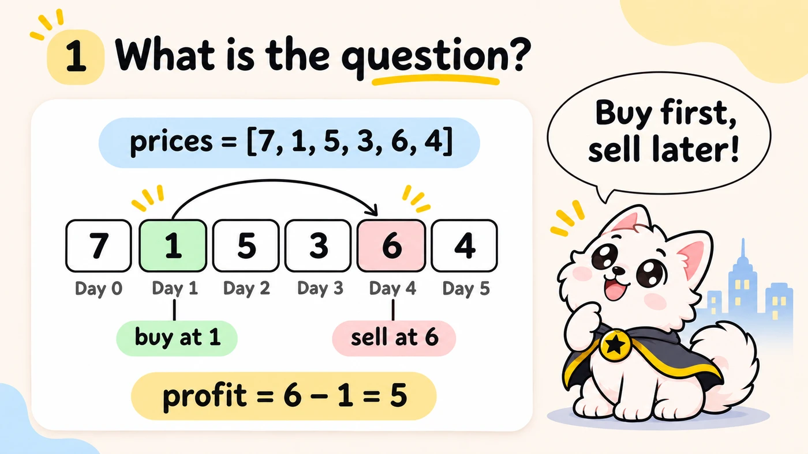
We must buy before we sell. If no later selling price gives us a profit, we return 0.
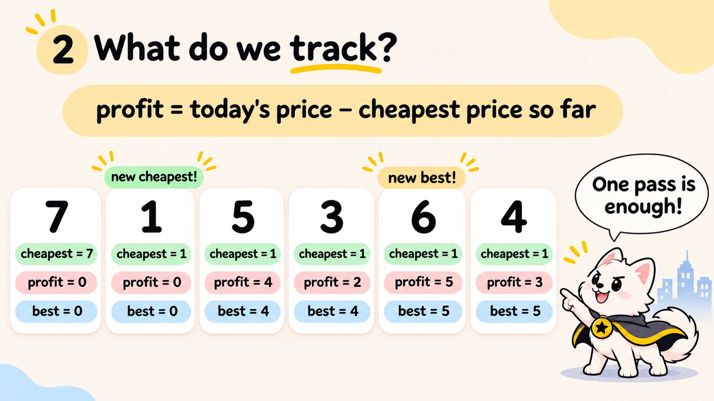
We walk through the prices once. We create the variable cheapest to keep track of the lowest price seen so far. This is the best price we could have bought at before selling today. So today’s profit is price - cheapest.
Tap Build it to see how I would write and explain the solution in an interview.
The one idea to remember
best.Write the whole function from memory. Use each comment to remember the next job. If a test fails, read the hint and check that step.
The first and last lines are already written. Fill both gaps inside the loop. Start each gap at the left edge.
def maxProfit(prices): cheapest = prices[0] best = 0 for price in prices:
return best
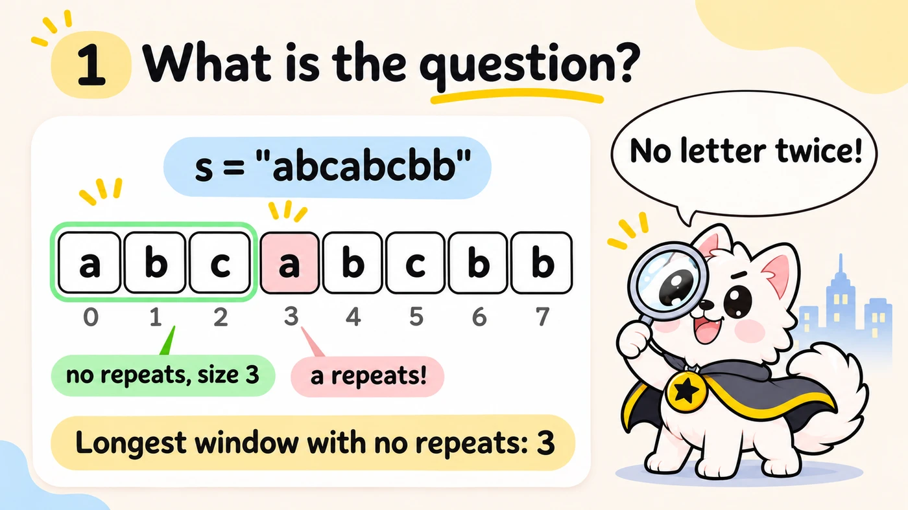
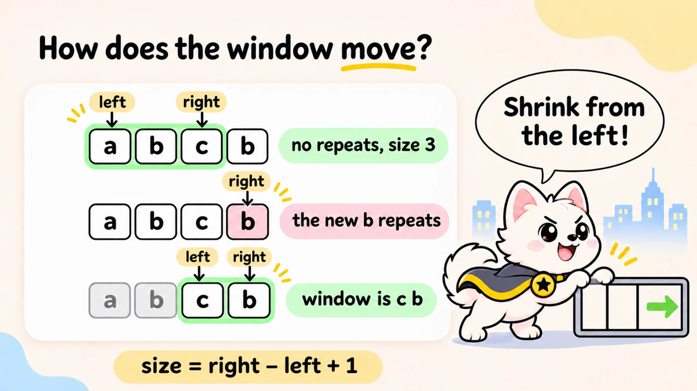
What do we need to remember?
First, we need to choose what to keep track of. Tap each question to see the answer.
We create the set seen to keep track of the letters in the current window. Then we can check whether the new letter is already there, which means it is a repeat.
We create the pointer left to mark where the window starts. The pointer right marks where the window ends. Together, they tell us which letters are inside the window.
We create the variable best to remember the longest valid window we have found. We find the current size with right - left + 1. Then we keep the larger of that size and best, so we return best.
Now we will run the code with the short string "abcb". Press Next to see each step.
def lengthOfLongestSubstring(s): seen = set() left = 0 best = 0 for right in range(len( # a repeat: drop from the left while s[right] in seen: seen.remove(s)): s[left]) left += 1 seen.add(s[right]) size = right - left + 1 best = max(best, size) return best
Tap Build it to see how I would write and explain this in an interview.
The one idea to remember
Write the whole function from memory. The comments explain each job. A failed test gives you a hint, not the answer.
The first and last lines are already written. Fill both gaps inside the loop. Start each gap at the left edge.
def lengthOfLongestSubstring(s): seen = set() left = 0 best = 0 for right in range(len( s)):
return best
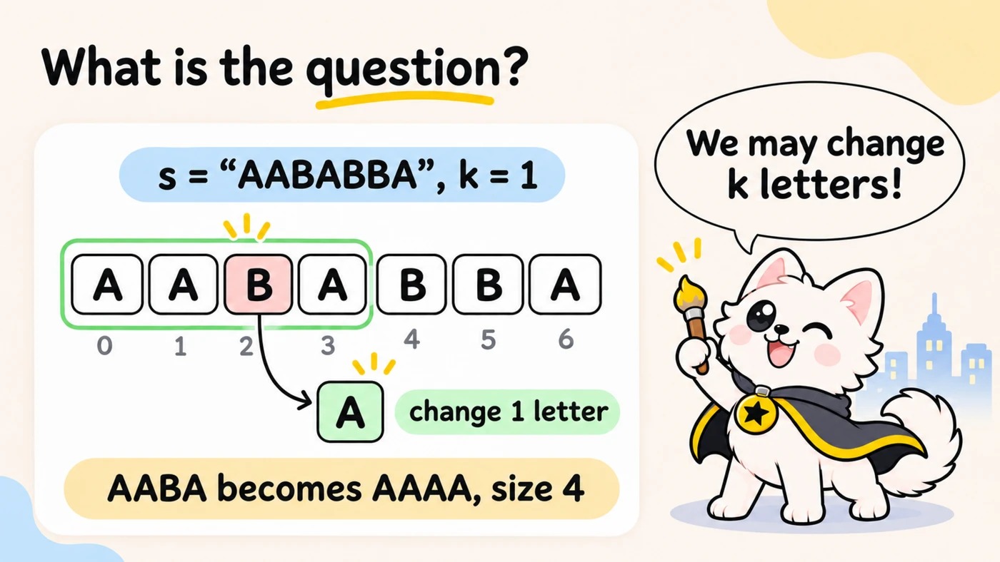
We can change up to k letters. Each letter can become any other letter. We need to find the longest group of matching letters next to each other.
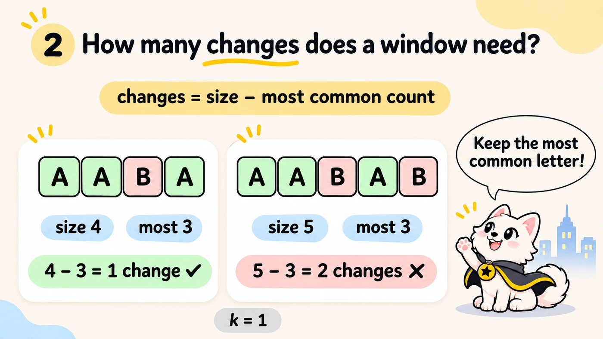
A window is a group of letters next to each other. We keep its most common letter because changing every other letter uses the fewest changes.
Pick a string. Then open the three tabs in order.
def characterReplacement(s, k): count = {} left = 0 best = 0 for right in range(len( letter = s[right] if letter not in count: count[letter] = 0 count[letter] += 1 size = right - left + 1 most = max(s)): count.values( # too many changes: shrink while size - most > k: count[s[left]] -= 1 left += 1 size = size - 1 most = max()) count.values( best = max()) best, size) return best
Tap Build it to see how I would write and explain this in an interview.
The one idea to remember
Write the whole function from memory. The comments describe each job. A failed test gives a hint.
The counting and final lines are already written. Fill both gaps. Start each gap at the left edge.
def characterReplacement(s, k): count = {} left = 0 best = 0 for right in range(len( letter = s[right] if letter not in count: count[letter] = 0 count[letter] += 1s)):
best = max(best, size) return best
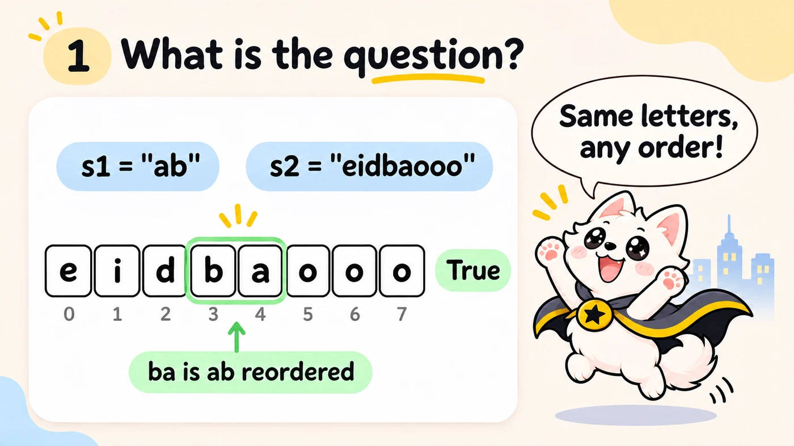
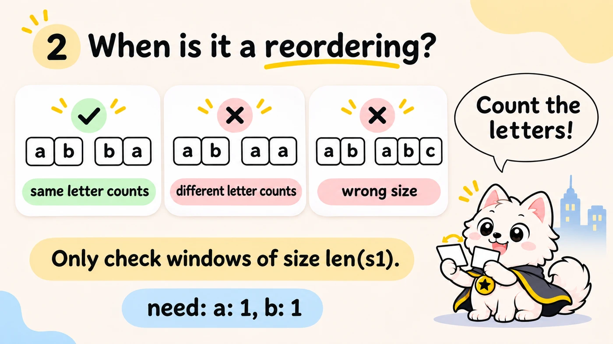
We create the dictionary need to keep track of how many times each letter appears in s1. We need these counts to know what a matching window must contain.
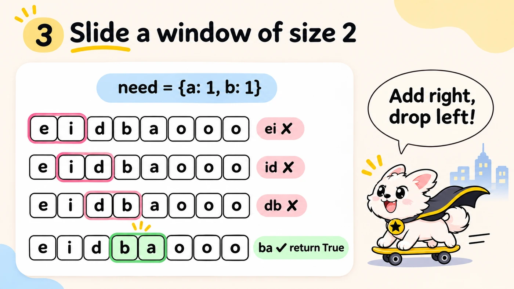
We create the dictionary window to keep track of the letters from the pointer left through the pointer right. We add the new right letter first. If the window becomes longer than s1, we remove the left letter and move the pointer left forward.
Tap Build it to see how I would write and explain the solution in an interview.
The one idea to remember
s1 because a permutation has the same letter counts. Then we slide a window of that size across s2. We add on the right and remove on the left, so the window keeps the right size. When its counts match, we return True.Write the whole function from memory. Use each comment to remember the next job. If a test fails, read the hint and check that step.
The first and last lines are already written. Fill both gaps inside the loop. Start each gap at the left edge.
from collections import Counterdef checkInclusion(s1, s2): need = Counter(s1) window = Counter() left = 0 for right in range(len( added = s2[right] window[added] += 1s2)):
return False
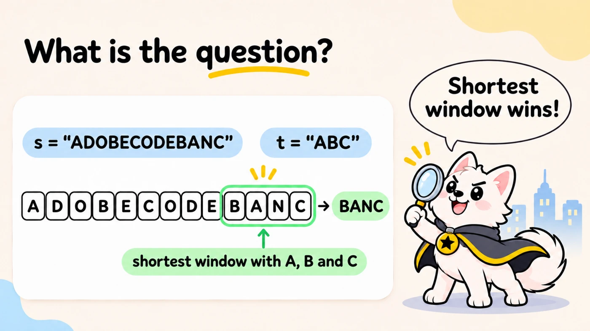
We need the shortest part of s that contains every letter of t. Repeated letters need repeated copies. If no window has every needed copy, we return an empty string.
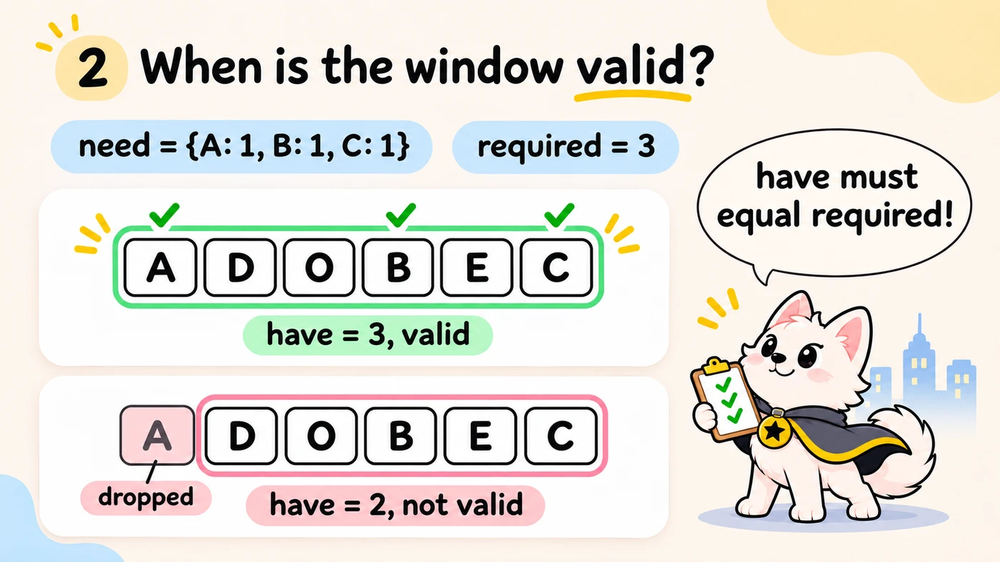
We create the Counter need to keep track of how many copies of each letter we need from t. We create the Counter window to count letters in the current window. We create the variable required to store how many different letters must reach their needed counts. We create the variable have to track how many have reached those counts.
The window is valid when have == required because every needed letter has enough copies. We increase have when a letter count exactly reaches its needed count. We do not increase it for extra copies because that letter already has enough.
Here t is "AAB", so need is {A: 2, B: 1}. The window has one A and one B. What is have, and why?
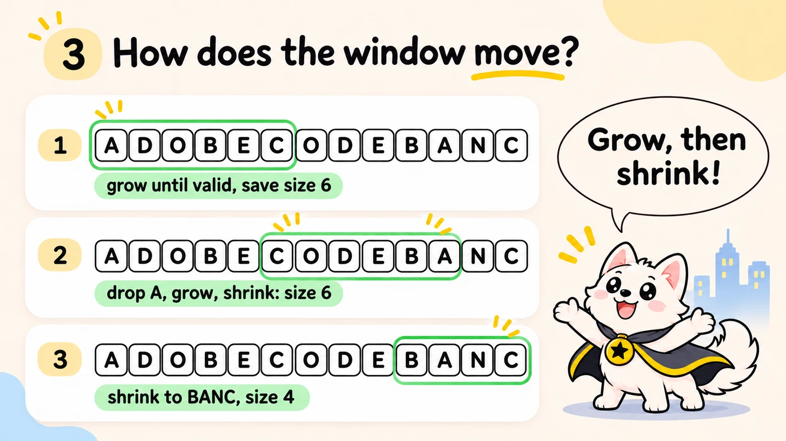
Watch the code run with s = "AABC" and t = "ABC". Press Next to see each step.
from collections import Counterdef minWindow(s, t): need = Counter(t) window = Counter() have = 0 required = len(need) best_left = 0 best_size = float('inf') left = 0 for right in range(len( added = s[right] window[added] += 1 if window[added] == need[added]: have += 1 # valid: shrink from the left while have == required: size = right - left + 1 if size < best_size: best_size = size best_left = left gone = s[left] window[gone] -= 1 if window[gone] < need[gone]: have -= 1 left += 1 if best_size == float(s)): 'inf'): return "" end = best_left + best_size return s[best_left:end]
Tap Build it to see how I would write and explain this in an interview.
The one idea to remember
Write the whole function from memory. The comments describe each job. A failed test gives a hint.
Most of the code is ready. Fill all three gaps. Start each gap at the left edge.
from collections import Counterdef minWindow(s, t): need = Counter(t) window = Counter() have = 0 required = len(need) best_left = 0 best_size = float('inf') left = 0 for right in range(len( added = s[right] window[added] += 1s)):
while have == required:
if best_size == float('inf'): return "" end = best_left + best_size return s[best_left:end]
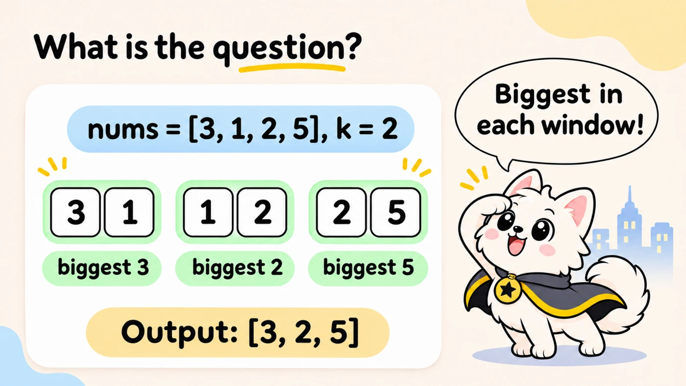
Each window contains k numbers next to each other. We need the biggest number in each window, so we move the window through nums and save one answer each time.
Checking every number again for each window would be slow. Instead, we create the queue queue to keep only numbers that can still become the biggest. We use a deque because we need to remove numbers quickly from both ends.
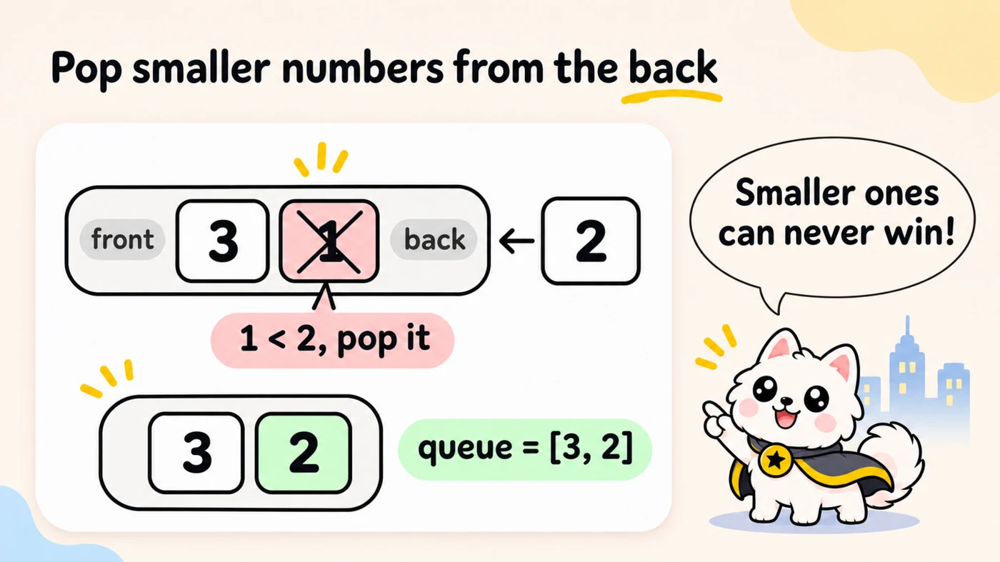
We keep the biggest number at the front of queue. When a new number arrives, we remove smaller numbers from the back because they cannot become the biggest before the new number. This keeps queue ordered from biggest to smallest.
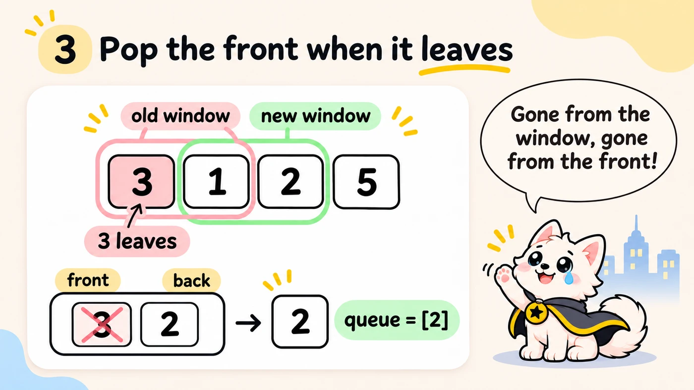
We store number values in queue, not their positions. When a number leaves the window, we remove it only if it matches the front because only the front can be the current maximum.
The queue contains [5, 3]. Then 4 arrives. Which number leaves, and what does the queue become?
Watch the code run with nums = [3, 1, 2, 5] and k = 2. Press Next to see each step.
from collections import dequedef maxSlidingWindow(nums, k): queue = deque() result = [] for right in range(len( new = nums[right] # smaller numbers can never win while queue and queue[-1] < new: queue.pop(nums)): ) queue.append(new) # drop the one that fell out left = right - k + 1 if left > 0: gone = nums[left - 1] if queue[0] == gone: queue.popleft() if left >= 0: result.append(queue[0]) return result
Tap Build it to see how I would write and explain this in an interview.
The one idea to remember
Write the whole function from memory. The comments describe each job. A failed test gives a hint.
Most of the code is ready. Fill all three gaps. Start each gap at the left edge.
from collections import dequedef maxSlidingWindow(nums, k): queue = deque() result = [] for right in range(len( new = nums[right]nums)):
queue.append(new) left = right - k + 1
return result